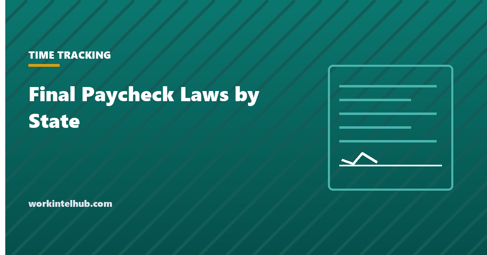

Final Paycheck Laws by State

There is no federal final paycheck deadline. The Fair Labor Standards Act requires only that wages be paid on the regular payday, so the deadline for a departing employee's last pay comes from state law, and the states range from "immediately, on the spot" to nothing at all.
Most states set a shorter deadline when the employer ends the employment than when the employee does, on the logic that an employer who chose the date could have had the cheque ready. The lookup below gives both for every state, and the table after it is the full list. The sections after that cover what has to be in the cheque and what late payment costs.
Look up your state
Deadlines are for the final wages earned. Vacation payout depends on the state and the policy; "Policy" in the last row means unused vacation must be paid if the written policy or practice provides for it. Deadlines change; confirm with the state labor department before relying on one.
All states
| State | Fired or laid off | Resigned | Vacation payout |
|---|---|---|---|
| Alabama | No state deadline; next regular payday in practice | No state deadline; next regular payday in practice | No |
| Alaska | Within 3 working days | Next regular payday at least 3 days after notice | Yes |
| Arizona | Within 7 working days or next payday, whichever first | Next regular payday | No |
| Arkansas | Within 7 days if demanded, otherwise next payday | Next regular payday | No |
| California | Immediately, at the time of termination | Within 72 hours; immediately if 72 hours' notice was given | Yes |
| Colorado | Immediately (within 24 hours if payroll is off-site) | Next regular payday | Yes |
| Connecticut | Next business day | Next regular payday | Policy |
| Delaware | Next regular payday | Next regular payday | Policy |
| District of Columbia | Next business day | Within 7 days or next payday, whichever first | Policy |
| Florida | No state deadline; next regular payday in practice | No state deadline; next regular payday in practice | No |
| Georgia | No state deadline; next regular payday in practice | No state deadline; next regular payday in practice | No |
| Hawaii | Immediately, or next business day | Next regular payday; last day if a pay period's notice was given | No |
| Idaho | Within 10 days or next payday; 48 hours on written request | Within 10 days or next payday; 48 hours on written request | Policy |
| Illinois | Next regular payday | Next regular payday | Yes |
| Indiana | Next regular payday | Next regular payday | Policy |
| Iowa | Next regular payday | Next regular payday | Policy |
| Kansas | Next regular payday | Next regular payday | Policy |
| Kentucky | Next payday or within 14 days, whichever later | Next payday or within 14 days, whichever later | Yes |
| Louisiana | Next payday or within 15 days, whichever first | Next payday or within 15 days, whichever first | Yes |
| Maine | Next payday or within 2 weeks of demand | Next payday or within 2 weeks of demand | Policy |
| Maryland | Next regular payday | Next regular payday | Policy |
| Massachusetts | Day of discharge | Next regular payday | Yes |
| Michigan | Next regular payday | Next regular payday | Policy |
| Minnesota | Within 24 hours of demand | Next payday at least 5 days after the last day, and within 20 days | Policy |
| Mississippi | No state deadline; next regular payday in practice | No state deadline; next regular payday in practice | No |
| Missouri | Day of discharge | No state deadline; next regular payday in practice | No |
| Montana | Immediately, or next payday if written policy provides | Next payday or within 15 days, whichever first | Yes |
| Nebraska | Next payday or within 2 weeks, whichever first | Next payday or within 2 weeks, whichever first | Yes |
| Nevada | Immediately; no later than 3 days | Next payday or within 7 days, whichever first | No |
| New Hampshire | Within 72 hours | Next regular payday; 72 hours if a pay period's notice was given | Policy |
| New Jersey | Next regular payday | Next regular payday | Policy |
| New Mexico | Within 5 days (fixed pay) or 10 days (variable pay) | Next regular payday | Policy |
| New York | Next regular payday | Next regular payday | Policy |
| North Carolina | Next regular payday | Next regular payday | Policy |
| North Dakota | Next regular payday | Next regular payday | Yes |
| Ohio | Next payday or within 15 days, whichever first | Next payday or within 15 days, whichever first | Policy |
| Oklahoma | Next regular payday | Next regular payday | Policy |
| Oregon | By the end of the next business day | Last day if 48 hours' notice was given; otherwise within 5 business days or next payday, whichever first | Policy |
| Pennsylvania | Next regular payday | Next regular payday | Policy |
| Rhode Island | Next regular payday | Next regular payday | Yes, after one year |
| South Carolina | Within 48 hours or next payday, not exceeding 30 days | Within 48 hours or next payday, not exceeding 30 days | Policy |
| South Dakota | Next regular payday, or when company property is returned | Next regular payday | Policy |
| Tennessee | Next payday or within 21 days, whichever later | Next payday or within 21 days, whichever later | Policy |
| Texas | Within 6 calendar days | Next regular payday | Policy |
| Utah | Within 24 hours | Next regular payday | Policy |
| Vermont | Within 72 hours | Next regular payday | Policy |
| Virginia | Next regular payday | Next regular payday | Policy |
| Washington | Next regular payday | Next regular payday | Policy |
| West Virginia | Next regular payday | Next regular payday | Policy |
| Wisconsin | Next regular payday | Next regular payday | Policy |
| Wyoming | Next regular payday | Next regular payday | Policy |
Sources are each state's wage payment statute. "No state deadline" states have no statute on final pay; the next regular payday is the practice and the federal fallback. Several states allow a written policy to change the deadline within limits, and several set different rules for commission and piece-rate pay. Confirm with the state labor department before relying on any single row, because these are amended regularly.
What the final cheque has to contain
- All wages earned through the last day worked, including overtime, at the correct regular rate. The overtime calculator covers the rate; the time card calculator covers the hours.
- Accrued, unused vacation where the state requires it or the policy provides it. California Labor Code 201 treats vested vacation as wages that must be paid at the final rate, and section 227.3 prohibits a policy that forfeits it. Other states follow the written policy. The PTO accrual calculator gives the balance.
- Earned commissions and bonuses under the plan's terms, which may fall due later than the wage deadline if the plan says so and the state permits it.
- Nothing withheld for unreturned property unless the state and a signed authorisation allow it. Deducting a laptop from a final cheque without both is the most common way an employer turns a clean separation into a wage claim.
What late payment costs
The penalties are the reason the deadlines matter more than they look. California's waiting time penalty under section 202 continues the employee's daily wage for every day the final pay is late, up to 30 days: an employee on $200 a day paid two weeks late is owed $2,800 on top of the wages. Massachusetts treble damages are mandatory for wage violations, including a late final cheque. Several other states add interest, statutory penalties or attorney's fees. A one-day slip in a "day of discharge" state is a violation, not a rounding error, which is why payroll should be able to produce a final cheque outside the normal cycle.
A separation process that meets every deadline
- Know the state's rule before the meeting, and for remote employees, the rule of the state where they work, not where the company is.
- For dismissals, have the cheque or the transfer ready on the day. In immediate-payment states it has to be; everywhere else it removes the risk.
- For resignations, calculate from the notice date, because several states shorten the deadline when notice was given.
- Include vacation, overtime and the last period's expenses, and itemise them on the stub.
- Handle property separately. Ask for it back; do not net it off.
- Job abandonment is a resignation without notice for final pay purposes, and the clock in a 72-hour state may already be running by the time the separation is confirmed. Our job abandonment page covers the sequence.
Key takeaways
- There is no federal final paycheck deadline. State law decides, and the states range from immediately to nothing.
- Most states set a shorter deadline for dismissals than resignations. California: immediately if fired, 72 hours if resigning without notice.
- Four states have no statute; the next regular payday is the practice there.
- The cheque must include all wages, overtime at the correct rate, and vacation where the state or the policy requires it. Property cannot be netted off without authorisation.
- Late payment penalties are severe: California continues daily wages for up to 30 days, Massachusetts trebles the amount.
- For remote employees, the rule is the state where they work. For abandonment, the clock may already be running.
Frequently asked questions
When do I have to get my final paycheck?
It depends on the state and on whether you were dismissed or resigned. Some states require payment immediately on dismissal; most require it by the next regular payday; California gives 72 hours after a resignation without notice. The lookup above gives both deadlines for every state.
Is there a federal law on final paychecks?
No deadline. The Fair Labor Standards Act requires wages to be paid on the regular payday, which becomes the fallback in the four states with no final pay statute: Alabama, Florida, Georgia and Mississippi.
Does my final paycheck have to include unused vacation?
In some states yes by statute, including California, Colorado, Illinois, Massachusetts and Nebraska among others. In most states it depends on the employer's written policy or established practice. Where the policy is silent, several states treat accrued vacation as earned wages that must be paid.
Can my employer withhold my final paycheck for unreturned equipment?
Generally not. Wages cannot be withheld or reduced for company property unless the state permits it and the employee has signed an authorisation, and even then the deduction usually cannot take pay below minimum wage. The employer's remedy is to request the property and, if necessary, pursue it separately.
What happens if an employer pays the final paycheck late?
Penalties vary by state. California adds the employee's daily wage for each day late, up to 30 days. Massachusetts requires treble damages. Others add interest, fixed penalties or attorney's fees. In immediate-payment states, a single day late is a violation.
Do final paycheck rules differ if I quit without notice?
In several states yes. California allows 72 hours after a resignation without notice but requires payment on the last day if 72 hours' notice was given; Oregon and New Hampshire have similar structures. Job abandonment is treated as a resignation without notice.